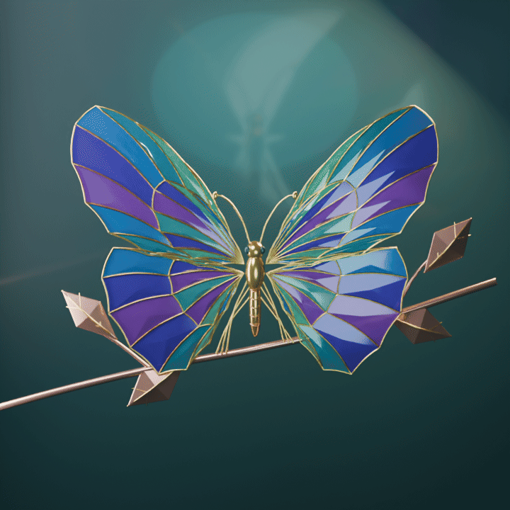
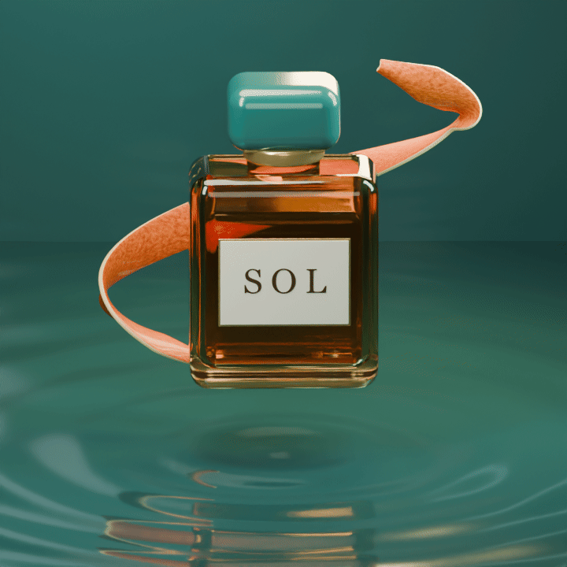
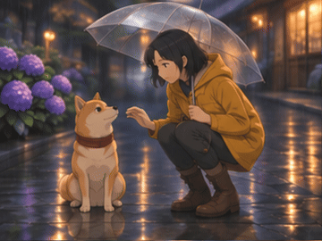
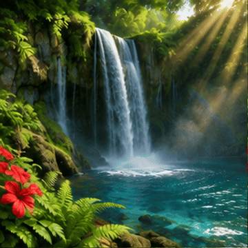

总计耗时 34 分 56 秒。以两批制作的会话起止时间合计，包含生成、渲染、编码与成片核验。
下载四个 GIF 合集

玻璃翅膀展开、合拢，再回到原位。
720 × 720 · 3.5 秒

瓶身轻转，水波和反光随之变化，SOL 标签保持一致。

女孩撑伞抚摸柴犬，狗狗歪头、眨眼，耳朵轻轻压低。
360 × 270 · 3.2 秒

固定构图呈现流水、水雾、潭面涟漪和前景蕨叶。
360 × 360 · 3.2 秒